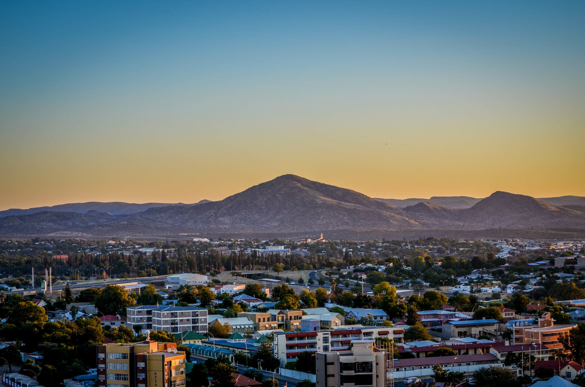

Discover the Charm of Windhoek
Welcome to Windhoek, Namibia - where history, culture, and adventure meet. Explore our landmarks, natural beauty, and local culture.
Learn More About WindhoekWelcome to Windhoek
Windhoek, the capital of Namibia, is a unique city known for its mix of modern and historic influences. Whether you are interested in exploring the city's historical sites, experiencing the local culture, or venturing out into the beautiful natural landscapes, Windhoek has something for everyone.